컴퓨터응용가공산업기사 (2012-05-20 기출문제)
1과목: 기계가공법 및 안전관리
1. 절삭공구인선의 파손원인 중 절삭공구의 측면과 피삭재의 가공면과의 마찰에 의하여 발생하는 것은?
- 크레이터마모
- 플랭크 마모
- 치핑
- 백리시
(정답률: 59%)

2. 퓨즈가 끊어져서 다시 끼웠을 때 또다시 끊어졌을 경우의 조치사항으로 가장 적합한 것은?
- 다시 한 번 끼워본다.
- 조금 더 용량이 큰 퓨즈를 끼운다.
- 합선 여부를 검사한다.
- 굵은 동선으로 마꾸어 끼운다.
(정답률: 84%)
3. 표준 맨드릴(mandrel)의 테이퍼 값으로 적합한 것은?
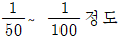
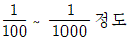
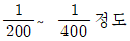
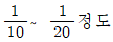
(정답률: 77%)
4. 브로칭(broaching)에 관한 설명 중 틀린 것은?
- 제작과 설계에 시간이 소요되며 공구의 값이 고가이다.
- 각 제품에 따라 브로치의 제작이 불편하다.
- 키 홈. 스플라인 홈 등을 가공하는데 사용한다.
- 브로치 압입방법에서는 나사식, 기어식, 공압식이 있다.
(정답률: 58%)
5. NC기계의 움직임을 전기적인 신호로 표시하는 회전 피드백 장치는 무엇인가?
- 리졸버(resolver)
- 서보 모터(servo moter)
- 컨트롤러(controller)
- 지령 테이프(NC tape)
(정답률: 79%)
6. 다음 연삭가공 중 강성이 크고, 강력한 연삭기가 개발됨으로 한번에 연삭 깊이를 크게 하여 가공능률을 향상시킨 것은?
- 자기 연삭
- 성형 연삭
- 그립 피드 연삭
- 경면 연삭
(정답률: 77%)
7. 마이크로미터의 스핀 등 나사의 피치가 0.5mm이고 딤블의 원주눈금이 50등분 되어 있다면 최소 측정값은?
- 2μm
- 5μm
- 10μm
- 15μm
(정답률: 72%)
8. 다음 중 각도측정기가 아닌 것은?
- 사인바
- 옵티컬플랫
- 오토 콜리메이터
- 탄젠트바
(정답률: 62%)
9. 드릴링머신으로 구멍 뚫기 작업을 할 때 주의해야 할 사항이다. 틀린 것은?
- 드릴은 흔들리지 않게 정확하게 고정해야 한다.
- 장갑을 끼고 작업을 하지 않는다.
- 구멍 뚫기가 끝날 무렵은 이송을 천천히 한다.
- 드릴이나 드릴 소켓 등을 뽑을 때에는 해머 등으로 두들겨 뽑는다.
(정답률: 84%)
10. KSB에 규정된 표면거칠기 표시방법이 아닌 것은?
- 산술평균 거칠기(Ra)
- 최대높이(Ry)
- 10점 평균 거칠기(Rz)
- 제곱 평균 거칠기(Ra)
(정답률: 82%)
11. 선반에서 지름 50mm의 재료를 절삭속도 60m/min, 이송 0.2mm/rev, 길이 30mm로 1회 가공할 때 필요한 시간은?
- 약 10초
- 약 18초
- 약 23초
- 약 39초
(정답률: 48%)
12. 분할대를 이용하여 원주를 18등분하고자 한다. 신시내티형(Cincinnati type) 54구멍 분할판을 사용하여 단식분할하려면 어떻게 하는가?
- 2회전하고, 2구멍씩 회전시킨다.
- 2회전하고, 4구멍씩 회전시킨다.
- 2회전하고, 8구멍씩 회전시킨다.
- 2회전하고, 12구멍씩 회전시킨다.
(정답률: 37%)
13. 공작기계작업에서 절삭제의 역할에 대한 설명으로 옳지 않은 것은?
- 절삭공구와 칩 사이의 마찰을 감소시킨다.
- 절삭시 열을 감소시켜 공구수명을 연장시킨다.
- 구성인선의 발생을 촉진시킨다.
- 가공면의 표면거칠기를 향상시킨다.
(정답률: 85%)
14. 연삭숫돌의 표시에서 WA 60 km V 1호 2⑤×19×15.88로 명기되어 있다. K는 무엇을 나타내는 부호인가?
- 입자
- 결합제
- 결합도
- 입도
(정답률: 66%)
15. 다음 중 가공물을 절삭할 때 발생되는 칩의 형태에 미치는 영향이 가장 적은 것은?
- 절삭깊이
- 공작물의 재질
- 절삭공구의 형상
- 윤활유
(정답률: 74%)
16. 래핑(lapping)작업에 관한 사항 중 틀린 것은?
- 경질 합금을 래핑할 때는 다이아몬드로 해서는 안된다.
- 래핑유(lap-oil)로는 석유를 사용해서는 안된다.
- 강철을 래핑할 때는 주철이 널리 사용된다.
- 랩 자료는 반드시 공작물보다 연질의 것을 사용한다.
(정답률: 48%)
17. 주철을 드릴로 가공할 때 드릴 날끝의 여유각을 몇 도(°)가 적합한가?
- 10° 이하
- 12°~15°
- 20°~32°
- 32° 이상
(정답률: 69%)
18. 밀링 머신의 주축베어링 윤활방법으로 가장 적합하지 않은 것은?
- 그리스 윤활
- 오일 미스트 윤활
- 강제식 윤활
- 패드 윤활
(정답률: 48%)
19. 다음 중 수평밀링머신의 긴 아버(long arbar)를 사용하는 절삭공구가 아닌 것은?
- 플레인 커터
- T홈 커터
- 앵귤러 커터
- 사이드 밀링커터
(정답률: 58%)
20. 마이크로미터의 사용시 일반적인 주의사항이 아닌 것은?
- 측정시 래칫 스톱은 1회전 반 또는 2회전 돌려 측정력을 가한다.
- 눈금을 읽을 때는 기선의 수직위치에서 읽는다.
- 사용 후에는 각 부분을 깨끗이 닦아 진동이 없고 직사광선을 잘 받는 곳에 보관하여야 한다.
- 대형 외측마이크로미터는 실제로 측정하는 자세로 0점 조정을 한다.
(정답률: 85%)
2과목: 기계설계 및 기계재료
21. 다음 중 선팽창계수가 큰 순서로 올바르게 나열된 것은?
- 알루미늄＞구리＞철＞크롬
- 철＞크롬＞구리＞알루미늄
- 크롬＞알루미늄＞철＞구리
- 구리＞철＞알루미늄＞크롬
(정답률: 69%)
22. 다음 금속 중 가공성과 전도성이 우수하여 방전용 전극 재료로 가장 많이 사용되고 있는 재료는?
- 구리(Cu)
- 알루미늄(Al)
- 아연(Zn)
- 마그네슘(Mg)
(정답률: 80%)
23. 다음 철광석 중에서 철의 성분이 가장 많이 포함된 것은?
- 자철광
- 망간광
- 갈철광
- 능철광
(정답률: 79%)
24. 복합재료 중 FRP는 무엇을 말하는가?
- 섬유 강화 목재
- 섬유 강화 플라스틱
- 섬유 강화 금속
- 섬유 강화 세라믹
(정답률: 87%)
25. 다음 중 소결합금으로 된 공구강은?
- 초경합금
- 스프링강
- 기계구조용강
- 탄소공구강
(정답률: 78%)
26. 아연에 대한 설명 중 틀린 것은?
- 조밀육방격자이며 회백색의 연한 금속이다.
- 비중이 7.1, 용융점이 420℃이다.
- 산, 알칼리, 해수 등에 부식되지 않는다.
- 철판, 철선의 도금에 사용된다.
(정답률: 74%)
27. 다음 중 강의 적열취성이 주 원인이 되는 원소는?
- Mn
- Si
- S
- P
(정답률: 54%)
28. 다음 알루미늄 합금 중 내열성이 있는 주물로 공랭실린더 헤드 및 피스톤 등에 널리 사용되는 것은?
- Y합금
- 라우탈
- 하이드로날륨
- 고력AL합금
(정답률: 66%)
29. 다음의 설명 중 옳지 않은 것은?
- A1변태는 강에서 일어나는 변태이다.
- 펄라이트는 순철의 일종이다.
- 오스테나이트의 최대 탄소고용량은 1130℃에서 약 2.0%이다.
- 시멘타이트는 철과 탄소의 화합물이다.
(정답률: 46%)
30. 저온뜨임의 목적이 아닌 것은?
- 솔바이트 조직 생성
- 내마모성의 향상
- 담금질 응력 제거
- 치수의 경년변화 방지
(정답률: 60%)
31. 잇수 30개 압력각 30°의 스퍼기어에서 언더컷이 생기지 않도록 전위기어로 제작하려 한다. 언더컷이 발생하지 않도록 하기 위한 최소이론 전위량은 몇 mm인가? (단, 모듈 m=6이다.)
- -10mm
- -12.5mm
- -14mm
- -16.5mm
(정답률: 23%)
32. 다음 설명 중 마찰자를 적용하기 힘든 경우는?
- 정확한 속도비가 필요할 경우
- 두 회전축이 교차하면서 회전력을 전달할 경우
- 전달력이 그렇게 크지 않은 경우
- 무단 변속을 시키는 경우
(정답률: 62%)
33. 높이 50mm의 사각봉이 압축하중을 받아 0.004의 변형률이 생겼다고 하면 이 봉의 높이는 얼마로 되었는가?
- 49.8mm
- 49.9mm
- 49.98mm
- 49.99mm
(정답률: 43%)
34. 관이음에서 방향을 바꾸는 경우 사용하는 관 이음쇠는?
- 소켓
- 니플
- 엘보
- 유니언
(정답률: 69%)
35. 볼 베어링의 기본부하용량 C, 베어링 이론하중 Pth, 회전수가 N일 때, 베어링의 수명시간 Lh는? (단, 하중계수는 fω, 속도계수(speed factor)는 fn, 수명계수(life factor)는 fh이다.)
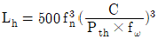
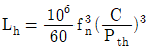
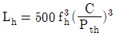
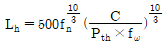
(정답률: 57%)
36. 축의 재료와 키(key)의 재료가 같을 경우, 축의 지름이 50mm에 폭 10mm의 묻힘 키를 설치했을 때, 전단으로 키가 파손되지 않으려면 키의 길이는 약 몇 mm이상이어야 하는가? (단, 키에서 발생하는 최대전단응력과 축에 발생하는 최대전단응력은 같다고 한다.)
- 55
- 73
- 99
- 126
(정답률: 30%)
37. 브레이크 슈의 길이 및 폭이 각각 75mm, 28mm이고, 브레이크 슈를 미는 힘이 343N일 때 브레이크 업력은 약 몇 MPa인가?
- 0.076
- 0.124
- 0.163
- 0.215
(정답률: 50%)
38. 리드각 α, 마찰계수 μ=tanρ인 나사의 자립(自立)조건을 만족하는 것은? (단, ρ는 마찰각을 의미한다.)
- α＜2ρ
- α2＜ρ
- α＜ρ
- α＞ρ
(정답률: 58%)
39. 일반적으로 두 축이 같은 평면 내에서 일정한 각도로 교차하는 경우에 운동을 전달하는 축이음은?
- 맞물림 클러치
- 플렉시블 커플링
- 플랜지 커플링
- 유니버설 조인트
(정답률: 38%)
40. 12m/s의 속도로 35.3kW의 동력을 전달하는 평벨트의 이완측 장력은 약 몇 N인가? (단, 긴장측의 장력은 이완측 장력의 3배이고, 원심력은 무시한다.)
- 980N
- 1471N
- 1961N
- 2942N
(정답률: 40%)
3과목: 컴퓨터응용가공
41. 다음 중 원추 단면곡선에 해당하지 않는 것은?(문제 오류로 실제 시험장에서 1, 4번 보기가 중복으로 나왔습니다. 정답은 었습니다. 열공하세요.)
- 포물선
- 스플라인곡선
- 타원
- 포물선
(정답률: 62%)
42. 다음 중 베지어(Bezier) 곡선에 관한 설명이 잘못된 것은?
- 곡선은 양단의 정점을 통과한다.
- 1개의 정점 변화는 곡선 전체에 영향을 미친다.
- n개의 정점에 의해서 정의된 곡선은 (n+1)차 곡선이다.
- 곡선은 정점을 연결시킬 수 있는 다각형의 내측에 존재한다.
(정답률: 77%)
43. 서피스 모델링(surface modeling)의 일반적인 특징으로 거리가 먼 것은?
- NC가공 정보를 얻을 수 있다.
- 은선 제거가 불가능하다.
- 물리적 성질 계산이 곤란하다.
- 복잡한 형상표현이 가능하다.
(정답률: 62%)
44. 다음의 솔리드 모델링(solis Modeling) 기능 중에서 하위구성 요소들을 수정하여 솔리드 모델을 직접 조작, 주어진 입체의 형상을 변화시켜 가면서 원하는 형상을 모델링 하는 것은?
- 트위킹(tweaking)
- 스키닝(skinning)
- 리프팅(lifting)
- 스위핑(sweeping)
(정답률: 46%)
45. 다음 모델링 중 부피, 무게중심, 관성모멘트 등의 물리적 성질을 제공할 수 있는 것은?
- 서피스 모델링
- 솔리드 모델링
- 와이어 프레인 모델링
- 2차원 모델링
(정답률: 82%)
46. 솔리드 모델링에서 CSG방식과 비교한 B-rep방식의 특성으로 보기 어려운 것은?
- 데이터 구조가 간단하다.
- 전개도 작성이 용이하다.
- 표면적 계산이 용이하다.
- 표면의 유한요소법 적용이 용이하다.
(정답률: 46%)
47. 자유곡면을 정의할 때 parameter space(domain)를 knots에 의해 분할하여 정의하는 것이 편리하다. 이렇게 분할된 구간의 단위 곡면을 무엇이라 하는가?
- element
- patch
- primitive
- segment
(정답률: 68%)
48. STEP 표준을 정의하는 모델링 언어는?
- EXPRESS
- PART
- PDES
- AP
(정답률: 55%)
49. 다음 은선 및 은면 제거(hidden line removal & hidden surface removal)에 대한 설명 중 옳지 않은 것은?
- 후향면(back-face) 알고리듬은 물체의 바깥쪽 방향에 있는 법선 벡터가 관찰자쪽을 향하고 있다면 물체의 면이 가시적이고, 그렇지 않으면 비가시적이라는 기본적인 개념을 이용한다.
- 깊이 분류(depth sorting) 알고리듬에서는 물체의 면들이 관찰자로부터의 거리로 정렬되며, 가장 가까운 면이 관찰자로부터의 거리로 정렬되며, 가장 가까운 면부터 가장 먼 면으로 각각의 색깔로 채워진다.
- 은선 제거를 위해서는 물체의 모든 모서리를 수반된 물체들의 면들에 의해 가려졌는지를 테스트하며, 테스트될 면이 남지 않을 때까지 각각의 중첩된 면들에 의해 가려진 부분을 모서리로부터 부분을 모아 그린다.
- z-버퍼 방법은 임의의 스크린의 영역이 관찰자에게 가장 가까운 요소들에 의해 차지된다는 깊이 분류(depth sorting) 알고리듬과 동일한 원리에 기초를 둔다.
(정답률: 51%)
50. 다음 그림과 같은 Filleted-endmill에서 Cutter Contact점(rCC)으로 Cutter Location점(rCL)을 계산하는 수식이다. 빈칸(수식의 □)에 들어갈 내용으로 맞는 것은?
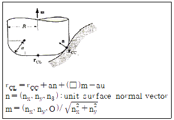
- R
- R+a
- 2R-a
- R-a
(정답률: 43%)
51. 쾌속조형(RP)에 관한 일반적인 설면 중 틀린 것은?
- 특징형상 기반 설계(feature-based design)나 특징형상 인식(feature recognition)이 필요하다.
- 재료를 제거하는 것이 아니라 재료를 더해 나가는 공정이다.
- 클램프(clamp), 지그(jig), 또는 고정구(flxture)를 고려할 필요가 없다.
- 물체를 만들기 위해 단면 데이터를 요구한다.
(정답률: 39%)
52. 절삭 작업 시 사용하는 공구의 파손 강도가 높은 것부터 순서대로 나열되어 있는 것은?(오류 신고가 접수된 문제입니다. 반드시 정답과 해설을 확인하시기 바랍니다.)
- 초경→고속도강→다이아몬드→세라믹
- 초경→고속도강→세라믹→다이아몬드
- 고속도강→초경→세라믹→다이아몬드
- 고속도강→초경→다이아몬드→세라믹
(정답률: 37%)
53. 다음 중 화상이 나타날 뷰일표면이 2차원의 단위 정발형 영역으로 정의되는 좌표계를 지칭하는 용어는?
- 장치 좌표계
- 실세계 좌표계
- 독립 좌표계
- 정규 좌표계
(정답률: 47%)
54. 공구가 따라가야 할 곡선상에 일련의 공구접촉점간의 거리를 직선 보간 길이(step length)라고 한다. 직선보간 길이를 매우 작게 하여 얻을 수 있는 이득으로 가장 적절한 것은?
- 가공 시간을 빠르게 할 수 있다.
- 곡선 윤곽의 실제 형상에 근사적으로 일치시킬 수 있다.
- 공구 접촉점의 수가 적어진다.
- NC 데이터 양이 적어진다.
(정답률: 54%)
55. serial data를 전송할 때 전송속도를 나타내는 단위는?
- CPS(character per second)
- DPS(dot per second)
- DPI(dot per inch)
- BPS(bits per second)
(정답률: 76%)
56. 3차원 솔리드 모델링을 구성하는 요소 중에서 프리미티브(primitive)라고 볼 수 없는 것은?
- 에지(edge)
- 원기둥(cylinder)
- 원뿔(cone)
- 구(sphere)
(정답률: 80%)
57. B-spline 곡선의 특징이 아닌 것은?
- 조정점들에 의해 인접한 B-spline 곡선간의 연속성이 보장된다.
- 국부적인 곡선 조정이 가능하다.
- 매개변수방식이므로 매개변수에 해당하는 좌표 값의 계산이 용이하다.
- 원이나 타원을 정확하게 표현할 수 있다.
(정답률: 45%)
58. CAD 시스템으로 만들어진 형상 모델을 바탕으로 CNC공작기계의 가공 data를 생성하는 소프트웨어 프로그램이나 절차를 뜻하는 말로 가장 적절한 것은?
- pre-processor
- post-processor
- multi-processor
- co-processor
(정답률: 82%)
59. 제조설비 발전단계를 연대별로 알맞게 나열한 것은?
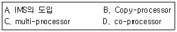
- D→B→A→C
- D→B→C→A
- B→D→C→A
- B→D→A→C
(정답률: 54%)
60. 두 점이 (x1, y1), (x2, y2)인
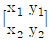
가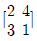
인 직선을 x방향으로 -1, y방향으로 3만큼 이동시킨 결과는?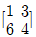
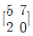
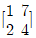
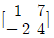
(정답률: 68%)
4과목: 기계제도 및 CNC공작법
61. 도면에서 가는 실선으로 표시된 대각선 부분의 의미는?
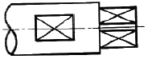
- 홈부분
- 곡면
- 평면
- 라운드 부분
(정답률: 80%)
62. 다음 중 도면이 갖추어야 할 요건으로 타당하지 않는 것은?
- 도면에 그려진 투상이 너무 작아 애매하게 해석될 경우에는 아예 그리지 않는다.
- 도면에 담겨진 정보는 간결하고 확실하게 이해할 수 있도록 표시한다.
- 도면은 충분한 내용과 양식을 갖추어야 한다.
- 도면에는 제품의 거칠기 상태, 재질, 가공방법 등의 정보도 포함하고 있어야 한다.
(정답률: 84%)
63. 도면에서 2종류 이상의 선이 같은 장소에 겹치게 될 경우에 다음 선 중에서 순위가 가장 낮은 것은?
- 중심선
- 숨은선
- 치수 보조선
- 절단선
(정답률: 68%)
64. 다음 중 합금 공구강 강재에 해당하지 않는 재료 기호는?
- STS
- STF
- STD
- STC
(정답률: 39%)
65. 다음 중 가공에 의한 줄무늬 방향 기호와 그 의미가 맞지 않는 것은?
- M:가공에 의한 컷의 줄무늬가 여러 방향으로 교차 또는 무방향
- X:가공에 의한 컷의 줄무늬가 기호를 기입한 면의 중심에 대하여 거의 방사 모양
- C:가공에 의한 컷의 줄무늬가 기호를 기입한 면의 중심에 대하여 거의 동심원 모양
- P:줄무늬 방향이 특별하며 방향이 없거나 돌출(돌기가 있는)할 때
(정답률: 58%)
66. 그림과 같은 제3각 정투상도의 입체도로 적합한 것은?
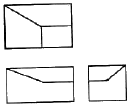
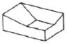
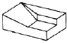
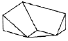
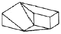
(정답률: 83%)
67. 다음 중 억지 끼워맞춤에 해당하는 것은?
- H7/k6
- H7/m6
- H7/n6
- H7/p6
(정답률: 72%)
68. 테어퍼 핀의 호칭 치수는 다음 중 어느 것인가?
- 굵은 쪽의 지름
- 가는 쪽의 지름
- 중앙부의 지름
- 테어퍼 핀 구멍의 지름
(정답률: 52%)
69. 다음 중 다이캐스팅용 알루미늄합금에 해당하는 기호는?
- WM 1
- ALDC 1
- BC １
- ZDC１
(정답률: 82%)
70. 다음 중 H7 구멍과 가장 헐겁게 끼워ㅣ는 축의 공차는?
- f6
- h6
- k6
- g6
(정답률: 57%)
71. 절삭 동력이 2kw이고, 주축 회전수가 500rpm일 때 선반에서 ø80mm의 환봉을 절삭하는 절삭 주분력은 약 몇 N인가?
- 95.5
- 955
- 90.7
- 907
(정답률: 48%)
72. CNC 기계에서 윤곽제어를 할 때 펄스를 분배하는 방식이 아닌 것은?
- MIT 방식
- DDA 방식
- 대수연상방식
- 산술연산방식
(정답률: 44%)
73. 머시닝센터 프로그램에서 공작물 좌표계를 설정하는 준비기능 코드는?
- G90
- G91
- G92
- G50
(정답률: 36%)
74. 다음 CNC선반 프로그램에서 A의 Q_, B의 D_ 의 의미는?
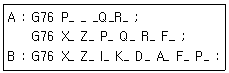
- 최초 절입량
- 나사산의 각도
- 나사산의 높이
- 다듬질 여유
(정답률: 70%)
75. 선반 외경용 ISO 툴 홀더의 규격 표시에서 ①, ②를 바르게 나타낸 것은?
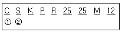
- ① 홀더 유형 ② 생크 폭
- ① 인서트 형상 ② 승수
- ① 클램핑 방법 ② 인서트 형상
- ① 스타일 ② 클램핑 방법
(정답률: 61%)
76. 일반적으로 CNC 공작기계에서 백래시(back lash)의 오차를 줄이기 위해 사용하는 것은?
- 리드 스크루(lead screw)
- 리졸버(resolver)
- 볼 스쿠르(ball screw)
- 서보기구(servo unit)
(정답률: 71%)
77. 방전가공의 일반적인 특징으로 틀린 것은?
- 열 변형이 적어 가공 정밀도가 우수하다.
- 가공속도가 빠르다.
- 전극이 소모된다.
- 담금질한 재료의 가공이 용이하다.
(정답률: 56%)
78. CNC가공 중 금지영역을 침범했을 때 발생하는 경보(alarm) 내용은?
- P/S ALARM
- EMERGENCY L/S ON
- OT ALARM
- TORQUE LIMIT ALARM
(정답률: 48%)
79. 머시닝센터의 보조기능 중 틀린 것은?
- M00:프로그램 정지
- M06:공구교환
- M09:절삭유 ON
- M98:보조 프로그램 호출
(정답률: 81%)
80. 다음 그림은 CNC선반 가공에서 공구 진행방향을 나타내고 있다. 공구 경로 B의 공구보정 기능을 맞는 것은?
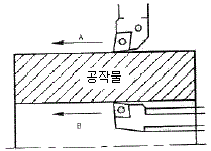
- G40
- G41
- G42
- G43
(정답률: 60%)